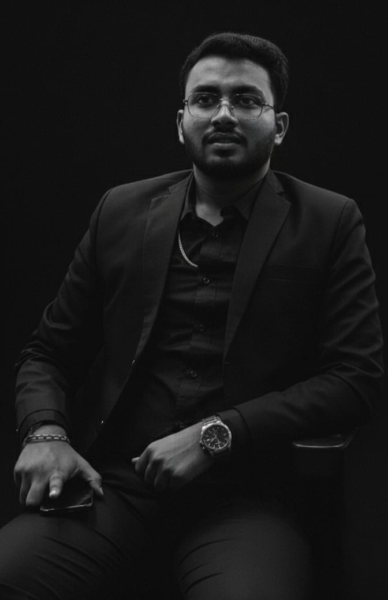
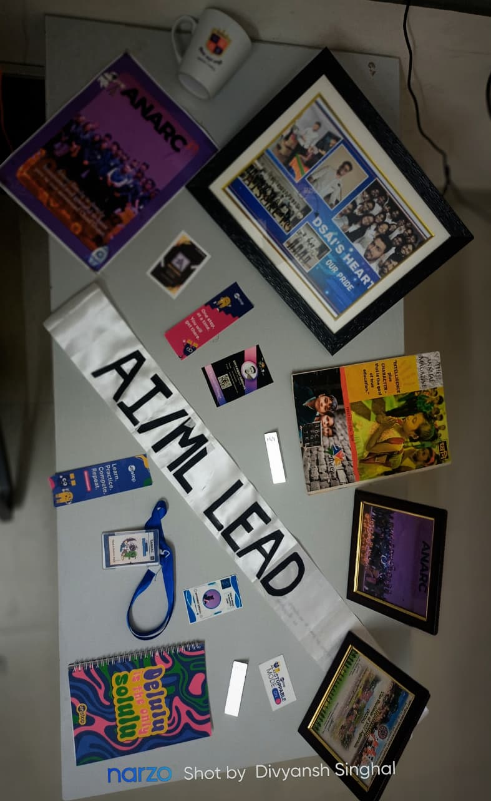
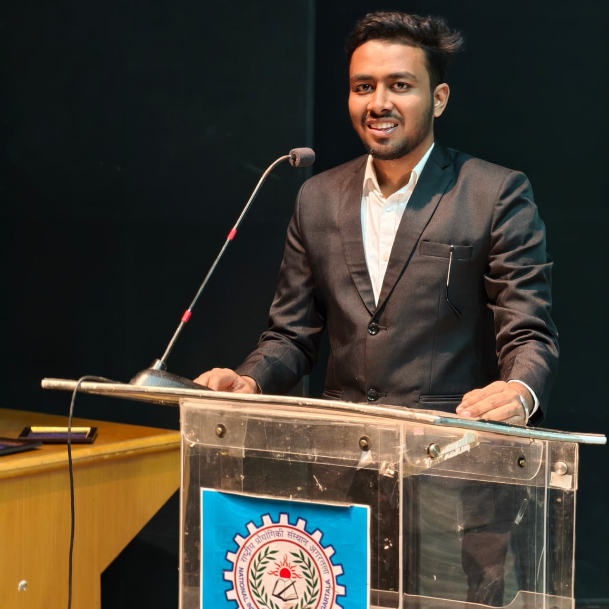

A Journey of Acceptance (#18 Divyansh Singhal, Mathematics and Computing, batch of 2026)
I loved Mathematics, though I still had no concrete goal of cracking JEE.
The Beginning: Finding Direction
In 10th grade, I didn’t even know the difference between IIT and ITI. My tution teacher became my mentor, planting the seed of what engineering could be.
Then COVID happened, disrupting my entire 12th year. In January, Amazon Academy launched, and I started studying something about JEE. With four JEE attempts available, I strategically chose the March attempt. Without unproper preparation, I scored 84 percentile, and that’s when I realized: if I actually studied, I could do better.
I decided to drop a year. When boards got canceled, Physics Wallah’s Prayas Batch launched the very next day. Physics and Chemistry went well, but Mathematics became a disaster, the bridge between concepts and practice was missing.
During my first attempt, I faced the infamous JEE Mains answer key issue where some marked answers weren’t recorded. Despite attempting 40 questions with a clear strategy, only 31 were recorded. I still managed 93 percentile.
In the second attempt, I completed Physics and Chemistry in 1.5 hours, scoring around 120 marks. But in the next 1.5 hours, I could only attempt two Mathematics questions. Sitting drenched in sweat under the fan, even the invigilator asked if I was okay.
Despite everything, I got Mathematics and Computing at NIT Agartala, the only college and branch I had filled in the entire Northeast. I arrived on November 9th, 2,800 kilometers from home in Najibabad, Uttar Pradesh.
My uncle dropped me off and stayed in the city for a week, saying, “If you face any problem, just tell us, we’ll bring you back.” It was my first time away from my joint family, my first time in a hostel.
The first year flew by impossibly fast, four months to complete the first semester, then just three months for the second. Being from BSMS, we had separate classes and our own course structure. We were adjusting, surviving, just trying to understand college life.

The Turning Point
In January, during the technical fest Aayam, I discovered different clubs. I was excited about E-Cell, ANARC’s Rubik’s Cube Solver, Pen Plotter and all of them attracted me immensely.
But it was WeCan that changed everything. A friend mentioned something was happening there, so I checked it out. Zaid bhaiya from BSMS Chemistry introduced us to the concept of WeCan teaching underprivileged children. I was completely drawn in and joined in my second semester as a volunteer.
Initially, I just went, taught kids, and came back. But when Zaid bhaiya went to Germany for an internship and then to IISER Kolkata, the question arose, “who would manage the WeCan now?”, and then with the best team we restarted it from scratch within 10 days.
The real transformation came on August 15th, where it was WeCan’s 10th anniversary. Bhaiya asked us to do something to mark it. I volunteered to write the speech, Swati and tania prepared a dance performance and trained students to perform it.
Despite the rain, we brought the kids back to the auditorium, recorded everything, and sent it to bhaiya. His response shook me: “Till now, you were just trying to restart something, but now I feel everything is going right.” For the first time, I felt trust, that what we were doing actually mattered.
Ananya and Growth
An alumni meet opened our eyes. We thought we’d done a lot, until our seniors told us what they’d accomplished years ago. We learned about Ananya, Weekend’s annual cultural and sports event for the children.
Organizing Ananya taught me everything about management. We secured funds, one senior from America sent $100, we collaborated with the Rotary Club who distributed books and supplies, and we connected with NGOs. The event management, team coordination, dealing with challenges, all of it shaped me.
But with growth came politics. Not the destructive kind initially, the healthy kind that taught me how corporate worlds work, how people take credit, how to survive and lead genuinely. Our batch was different; even those involved in politics remain my friends today, because they taught me so much.
However, later politics around fund management and positions became bitter. After Moksha, when blame games started about funds despite everything being transparent, I decided to leave. My team had given their best, Swati, Devanshu, Tushar, and incredible juniors like Gayatri, Keerti, Shubham, Parmesh and many more became family. But it was time to move on.
Technical Awakening
In October of second year, I joined e-Yantra, IIT Bombay’s robotics competition, not particularly to win, but to learn. With Diya, Vartika and Eshwar, we chose the problem statement with maximum ML and data science elements. We progressed to the third round, studied QGIS, built models and that’s where my technical journey truly began.
After e-Yantra, I approached ANARC with a PPT on a light-following bot project. Despite being rejected in their written exam initially, but this beside knowledge my management experience from WeCan and my dedication got me in. They even created a new position, AI ML lead later, specifically for me. And hence, one dream fulfilled.
From there, I dove deep into Data Science and Machine Learning, though I still lacked proper guidance.

Founding DSAI
When I told seniors, “There’s no club for Data Science and Machine Learning, and we need one,” and the timing was perfect. Punit bhaiya and Abhishek bhaiya approached me to be a founding member of DSAI (Data Science and AI club).
In second year, with minimal Python knowledge, but with a clear vision. I took Diya, Devanshu, and Aditya Raj and during winter holidays, bhaiya gave a 100-day course which I completed till 40 days, working relentlessly on projects.
We became an official club in January and immediately expanded our activities. Within just two days, we reached out to speakers, arranged funding, and initiated four projects — including Emotional Facial Recognition, Cursor Control using IRIS, and my project Flight Sky Saver, which finds the cheapest flight routes. We also conducted three speaker sessions and a workshop where we taught three key libraries. This marked our strong entry into Aayam, the technical fest of NIT Agartala, as well as into the college’s technical club community.
Being a founding Vice President while managing ANARC dropped my CGPA from 8.8, but I regret nothing. By then, I was ranked on Google when searching “data scientist in Agartala”, just one year after starting Python. That was my proudest moment.
We restarted IEEE, collaborated with organisations, and DSAI reached stability.
Research Dreams: IIT Roorkee Experience
As the second year ended, I wanted research experience. I started cold emailing professors just two days before deadlines, terrible timing. But fate intervened when I reached out to my department’s professor and he asked, “Where are you from?” When I said “Near Haridwar,” he called Kusum Deep ma’am at IIT Roorkee and he recommended me there and a journey began.
Remembering the initial days, ma’am was intimidating, an Emeritus Professor, among the world’s top scientists, someone so valuable the institute extended her service even after retirement. On my first day, I watched her fail five students without mercy. One even tried touching her feet, she said, “There’s no need for this kind of drama in front of me.” I was terrified, thinking how I’d survive two months there.
But she was incredible. She gave me papers to read, told me to study NPTEL lectures. When I read 110 pages of a book in one day instead of watching lectures, she said, “I like that you’re reading books. Students nowadays only want shortcuts.” She even let me take the book home. I finished nine chapters in one and a half months. I still have it with me, it was O.REILLY Hands-On Machine Learning with Scikit-Learn, Keras, and TensorFlow, 3nd Edition by Aurélien Géron.
My dream project emerged there, using AI to detect diseases from eye images, inspired by how traditional Vaidyas diagnosed illnesses by looking at eyes and pulse. Research shows it’s scientifically possible, diabetes can be detected through retinal analysis. I envisioned a system where you place a device near your eyes, capture an image, and instantly get disease probabilities or parameter readings. Imagine how many resources would be saved, how much time conserved, especially in underdeveloped areas or places without proper medical access. This still remains my dream project for the future.
When we couldn’t find adequate datasets for that, ma’am assigned a COVID-19 vaccine side effects study. Didi there gave me three research papers to prepare questions from which we used to create a g-form but it became so lengthy that it took 17 minutes to fill, nobody would do it.
When data collection stalled at 150 responses after 8 days of internet outreach, I had an insight from my WeCan and ANARC experience. ANARC’s recruitment was happening, 50 students learning AI/ML who would understand data’s importance. I explained the concept to them, and asked each to get their parents’ responses too. Different age groups emerged. We reached 542 responses overnight.
Three days and nights of continuous analysis, 82 slides, 4-5 graphs each. A doctor even sent detailed case reports. The research revealed shocking insights: memory loss (short-term forgetfulness), and surprisingly, our age group (18-30) faced the most vaccine side effects, not the elderly or children. This happened because we were vaccinated in the last phase during peak chaos, possibly exposing us to fake vaccines due to corruption when demand was high and supply limited. Older people were vaccinated first in the early, more stable phase.
The paper got published at the end of second year. An actual research paper while still in second year.

The Placement Saga: Testing by Destiny
Third year brought recognition, selected for Amazon ML Summer School (only two from our college, both from DSAI), Goldman Sachs interviews (only four selected from the entire college), and more. But rejections kept on coming too.
Goldman Sachs asked me to reverse a double linked list, such an easy question, but unless recently studied, impossible to recall instantly. I couldn’t explain it completely. One rejection.
Amazon sent a kit (water bottle), I cleared their OA, but no response after that. Another disappointment.
In fourth year, drama unfolded, our BS-MS batch was told we couldn’t sit for placements. We fought back. Finally, a rule was made: give a declaration whether you’ll pursue MS or not. If pursuing MS, placements in fifth year only. If not, fourth year. We agreed and gave our declaration at the start of fourth year.
Then I sat for placement and it was like none other interviews were going perfectly, technical and verbal rounds getting cleared All ten questions done. The interviewer said, “There’s nothing I feel you need to improve. You’re doing great.”
Then came the third round, the puzzle question. I knew the answer was “two.” But in front of the interviewer, my brain froze. I said “four.” He didn’t even ask me to explain. Rejected despite performing brilliantly in all three rounds. That hurt, being that close.
TrueFoundry was next. My name was on the top 10 profiles list (which came for 3 frontend, 3 backend, 3 ML)in the campus. Eventually got shortlisted, solved the full question but not perfectly optimized. Rejected again on OOPs/DSA.
Then came the week that tested everything, 6th to 11th October. Multiple interviews scheduled: Cisco (networking role), Quantify (ML), written exams, and more, all clashing.
On the 7th, Cisco’s interview was scheduled for 11:00 to 11:40 AM. At 11:00, nothing happened. At 11:50, they took someone else. By 12:30, Quantify’s OA had started. I was stuck, should I wait for Cisco or start Quantify? But the luck again didn’t favoured me both aligned at very same time not even a single second here or there. Growth Jockey proctoring system lagged badly, questions didn’t load, execute button stopped working due to overload, and I had to keep my phone camera on the entire test because their site lacked webcam access. I couldn’t perform. Third company rejection in a single day.
That evening, for the first time, I truly cried. “What mistake did I make? Why am I not getting anything despite doing everything right?”
I knew my domain, my role, my work, then why? It wasn’t about selection or rejection anymore, it was about why nothing was working out.
That night, I asked myself and God where I was going wrong. The answer came in my own thoughts: When destiny withholds something, it’s preparing something bigger.
New days brought more interviews and on the next day, I had a written exam. I studied all night on the 8th for my paper, knowing I wouldn’t get time on the 9th.

The Dream Realized
On the 9th, as TNP coordinator for ACT-fibernet, I woke up at 7 AM after sleeping at 4 AM. HR was already calling, scolding me about pending details. By noon, I went from campus to Rani Bazar, picked up a cab, waited an hour, then picked up six company executives, two VPs, two CTOs, high-level but humble people.
They asked us to arrange food. I was getting constant calls about shortlists, names, confirmations but I didn’t even have the list yet. Another layer of stress. I was sleep-deprived, hadn’t eaten since morning, had duty, had audi management, presentation pending, and an exam the next day. Most TNP team members were unavailable. But with Ayush, Krishna and others, we managed.
When shortlist results came, my name topped the IT list. People started saying, “He got shortlisted because he was handling TNP.” I didn’t care, I knew my effort was real, and it was legitimately on my resume.
The Group Discussion began. Just imagine, I’d woken up at 4 AM, got up again at 7 AM, ran around managing everything, and now had to perform. 10 people sat beside me Four people were one of the best speakers. One was the branch topper who wakes at 3 AM daily with 9.8 CGPA. Another was already placed at Future First.
Topic given “Is social media connecting people or isolating them?”
In three minutes, I filled an entire sheet with points, pros, cons, counters to each. I almost said “Education can be harmful,” but corrected myself mid-sentence to “Some people, by studying too much, lose stability and peace of mind.” Natural, relatable points flowed.
GD results: They’d conduct interviews for three IT candidates based on priority from GD performance. I topped the GD shortlist.
The CTO and VP interviewed me face-to-face for 1.5 hours at 7 PM, Decision trees, svms, conceptual deep-dives, everything explained clearly one by one. It went really well. The VP told me, “You’ve performed really well.” That made me genuinely happy.
The next day, more interviews started with the HR round in the morning. Two rounds total that day. In HR, they tried convincing me: “What if we don’t give you an AI/ML role? Would you still be interested?” I said, “Sir, I’ll get to learn from your team, people with years of experience and deeper knowledge. That itself would be valuable.”
Results came: Anshuman Das got selected. Krishna’s result “On hold for now.” As for me, one more round remained with the CIO round (Chief Information Officer).
At 3:12 PM, I got the update: interview rescheduled to 3:55 PM. I stayed back in the CCD room, revising three full pages of interview notes that I performed. The interview started at 3:55 PM, and lasted about 20 minutes, of which for 7.5 minutes we discussed why I chose Mathematics in Computing and I could not explain my ML goals.
But again, they said: “We can’t guarantee an AI/ML-specific role immediately. There aren’t many projects in that domain now. You might get it later. When you join, we can’t promise you’ll get an AI/ML project, others have more experience. We’ll assign projects accordingly.”
He asked, “If that happens, will you still be happy?” He even added, “This is your first offer, you won’t be able to reject it, but you might not be fully happy either.”
I smiled and said, “Sir, whatever role you give me, I’ll do it wholeheartedly. I’m ready for it, because what matters most is that I’ll get a chance to learn there.”
No results came that day. The interview ended. He said, “Your HR will be informed,” and that HR would contact me after her flight.
About an hour later, I texted: “Ma’am, is there any update over my profile?”
She saw it. No reply.
The stress was at its absolute peak. I tried to study for the next day’s paper but couldn’t focus. I told myself I’d wake up early and study. I went to bed around 11 PM.
At 12:15 AM, HR’s flight landed. At 12:18 AM, I got a WhatsApp message but I was asleep.
Then Krishna called. After that, the official email came.
HR sent the mail at 12:30 in the night.
Krishna called again: “Bhai, congratulations! You’re selected!”
I said, “Don’t joke, yaar. Who sends a confirmation mail at 12:30 AM? She just landed from her flight.”
He said, “No bhai, it’s real, check your phone.”
My phone had crashed. When I finally switched it on, WhatsApp was open and right on top was the message from the HR.
I looked at it and smiled because I had said earlier, “Destiny decides what’s meant for you.”
The result came on 11th October and the day after the interview. 11th October is my parents’ 25th wedding anniversary.
The result could’ve come